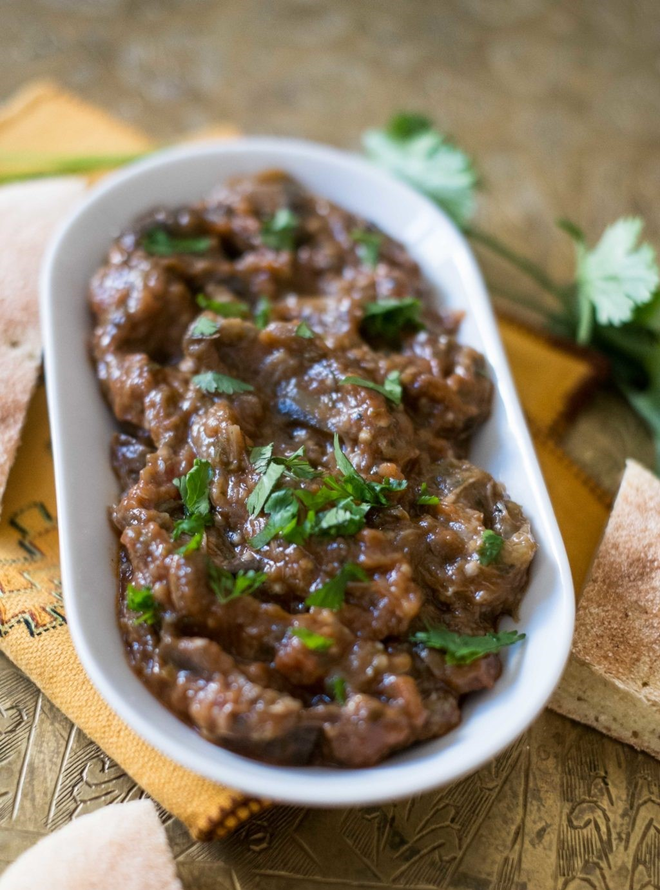
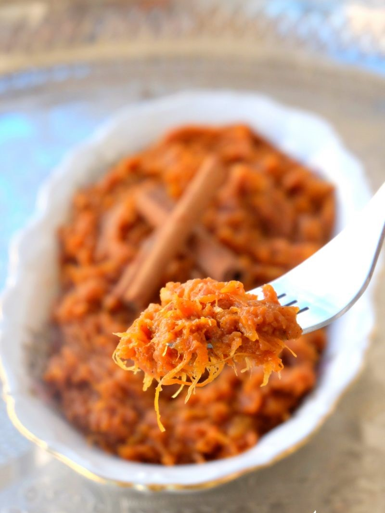
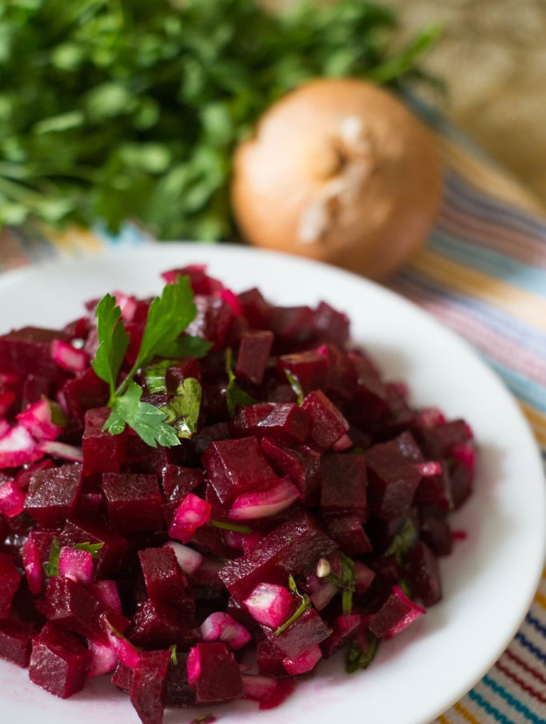

<div class="container mt-4">
  <div class="row">
    <div class="col-lg-4 col-md-4 col-xd-12">
      
      <h4>Zaalouk</h4>
      <p class="text-justify">un dip d’aubergines à la tomate et aux épices. C’est un délice !    </div>
    <div class="col-lg-4 col-md-4 col-xd-12">
      
      <h4>Graa Massla </h4>
      <p class="text-justify">C’est un dip sucré/salé à base de citrouille. Elle est caramélisée à la cannelle. C’est délicieux !</p>
    </div>
    <div class="col-lg-4 col-md-4 col-xd-12">
      
      <h4>Salade de betterave </h4>
      <p class="text-justify">Une délicieuse association entre la betterave et l’oignon !</p>
    </div>
    </div>
</div>

